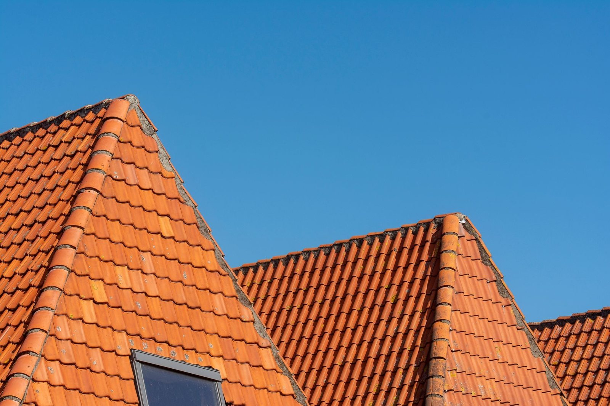
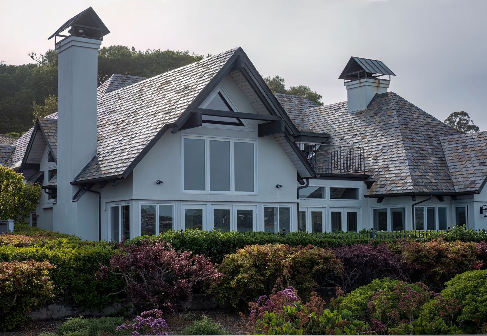

Prosty, przewidywalny proces. Bez niespodzianek i bez naciągania.
Opisujesz, co się dzieje z dachem. Od razu mówię, czy to brzmi jak naprawa, czy jak większa robota - i kiedy mogę wejść na pomiar.
Wchodzę na dach, mierzę i robię zdjęcia. Wycenę dostajesz na piśmie, rozbitą na pozycje - materiał osobno, robota osobno.
Rozbieram tylko tyle dachu, ile zdążę zamknąć przed nocą. Reszta czeka pod plandeką - dom nie stoi otwarty na deszcz.
Stare pokrycie jedzie na kontener, a Ty dostajesz gwarancję na robociznę - jak coś nie gra, wracam i poprawiam.
Zakres prac, jaki robimy najczęściej - pełny opis i wycenę znajdziesz niżej.
Prowadzę autoryzowany punkt Blachotrapez przy ul. Reymonta 25A - materiał masz z pierwszej ręki, w komplecie: blacha, obróbki i akcesoria z jednego systemu trzymają się razem dłużej niż przypadkowo dobrane zamienniki.
Konkretny model, kolor i grubość blachy dobieram przy pomiarze - pod Twój dach, kąt połaci i budżet.
Każdy z tych dachów ma pod sobą czyjś dom. Pokrycia, więźby, obróbki - bez upiększania.





Miejsce na opinie Twoich klientów - po uruchomieniu strony podpinamy tu recenzje z Google i wizytówki.
Wymiana pokrycia na domu poszła sprawnie i w terminie. Wycena rozpisana na materiał i robociznę, bez dopisywania kosztów po fakcie.
Zależało mi na naprawie, nie wymianie całego dachu - i tak zostało zrobione. Uczciwe podejście, obyło się bez naciągania na większą robotę.
Obróbki komina i nowe rynny rozwiązały problem zacieków na elewacji. Dokładna, solidna robota - polecam.
Nie wiesz, czy dojeżdżam do Ciebie? Zadzwoń i zapytaj. Jak nie robię w Twojej okolicy, powiem od razu i nie zmarnuję Ci dnia.
Bez pomiaru nie strzelam - za dużo zależy od powierzchni, kątów i pokrycia. Widełki usłyszysz już przez telefon, dokładną cenę po pomiarze.
Nie. Pomiar i wycena w Żyrardowie i najbliższej okolicy są bezpłatne i do niczego nie zobowiązują.
Typowy dom to zwykle tydzień, dwa - zależnie od pokrycia i pogody. Termin i czas roboty znasz przed startem, a o przesunięciu przez pogodę mówię od razu, nie po fakcie.
Rozbiórka i wywóz są w wycenie, chyba że umówimy się inaczej. Stary eternit oddaję firmie z uprawnieniami do azbestu - tego nie wolno wywieźć byle gdzie i nie ma co ryzykować.
Tak - VAT albo paragon, jak wolisz. Przy większych dachach rozliczamy się etapami, po odebranej robocie.
Wracam i sprawdzam, gdzie puściło. Moja robota - poprawiam za darmo; przyczyna gdzie indziej - pokazuję zdjęcia i mówię, co z tym zrobić.
Zadzwoń lub napisz - przyjadę, obejrzę dach i podam jasną cenę. Bez zobowiązań.